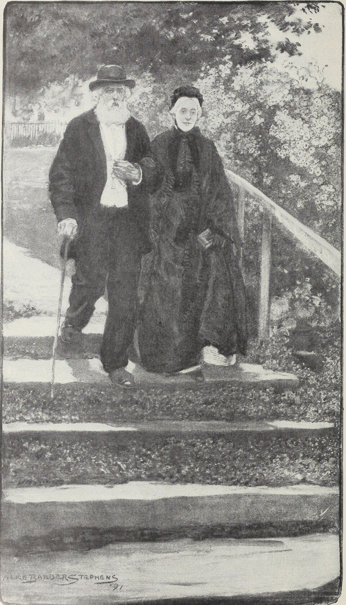

_-_Alice_Barber_Stephens.jpg){kind=link}

En 2024, la Comisión Lancet sobre prevención de la demencia actualizó su informe y llegó a una conclusión esperanzadora: cerca del 45 % de los casos de demencia del mundo se podrían prevenir o retrasar actuando sobre catorce factores de riesgo modificables.
Los catorce factores
En la juventud
- Menor nivel educativo.
En la edad media de la vida
- Pérdida de audición.
- Colesterol LDL alto (nuevo en 2024).
- Depresión.
- Traumatismos craneales.
- Sedentarismo.
- Diabetes.
- Tabaco.
- Hipertensión arterial.
- Obesidad.
- Consumo excesivo de alcohol.
En la vejez
- Aislamiento social.
- Contaminación del aire.
- Pérdida de visión no tratada (nueva en 2024).
Los dos que más pesan son la pérdida de audición y el colesterol LDL alto, con un 7 % del riesgo cada uno.
Qué significa
No quiere decir que la demencia sea culpa de nadie: la edad y la genética siguen siendo los factores más importantes, y muchas personas con una vida muy sana la desarrollan. Pero sí quiere decir que nunca es pronto ni tarde para cuidar el cerebro: audífonos si se oye mal, gafas o cirugía de cataratas si se ve mal, controlar la tensión y el colesterol, moverse, no fumar y mantener la vida social.
Lo explicamos con detalle en Los 14 factores de riesgo de demencia.
Fuentes
- Livingston G, Huntley J, Liu KY, et al. Dementia prevention, intervention, and care: 2024 report of the Lancet standing Commission. Lancet. 2024;404(10452):572-628.
- Organización Mundial de la Salud. Demencia. Nota descriptiva.